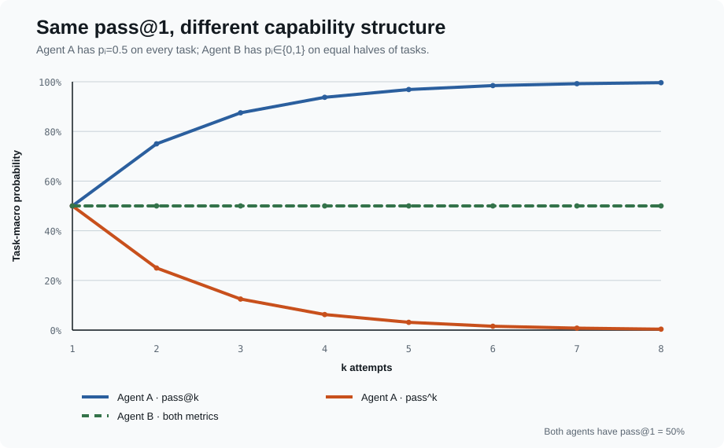
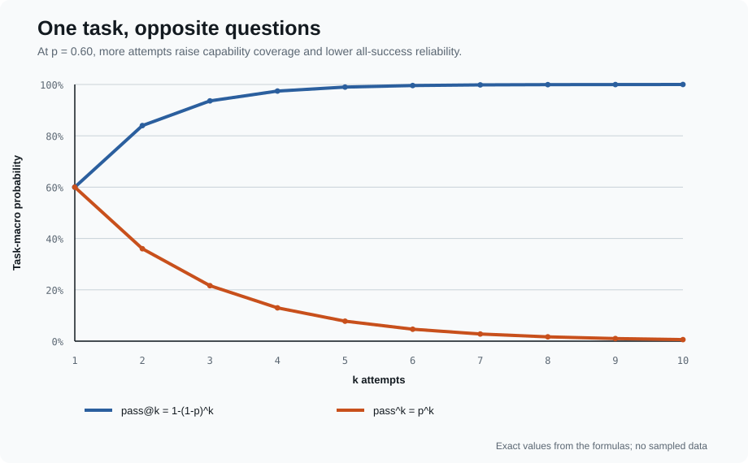

第 2 课:Repeated Trials——Capability 与 Reliability
同一个 Agent「有时能做到」和「每次都能做到」是两件事
Week 3 Day 2 · 统计推断课 · 建议 70 分钟 + lab
本课唯一命题
pass@k和pass^k不是同一个指标的两种写法。前者问 k 次里能否至少成功一次;后者问 k 次是否全部成功。选哪一个由产品事件、选择器、依赖结构与预算共同决定。
📄 HumanEval/Codex §2.1、Appendix A ·
pass@kfinite-sample estimator 📄 τ-bench §3 ·pass^kreliability metric 📄 On Randomness in Agentic Evals §2.3–3 📄 Don't Pass@k · Bayes@N + credible intervals 的批判性阅读 💻 输入:Lesson 1 的 canonicalTrialResulttable
§ 00先看两个 pass@1=50% 的 Agent
100 个 task,两种完全不同的 task-level success probability 分布:
但 $k=5$ 时:
| Agent | pass@1 |
pass@5 |
pass^5 |
|---|---|---|---|
| A:每题 $p_i=0.5$ | 50.0% | 96.875% | 3.125% |
| B:一半 $p_i=1$,一半 $p_i=0$ | 50.0% | 50.0% | 50.0% |

Agent A 的能力覆盖面很大:多试几次几乎每题都可能撞对;但一致性差。Agent B 的能力边界很硬:重试没有帮助,但它会做的题非常稳定。
pass@1只告诉你 $\mathbb E[p_i]$,没有告诉你 $p_i$ 在 tasks 之间怎样分布。
§ 01先定义产品事件,再写公式
沿用 Lesson 1:
假设同一 task 的 $k$ 次 attempts 在条件 $A,C$ 下 i.i.d.。对 task $i$:
再对目标 task distribution 做 task-macro average:
两条曲线在 $k=1$ 相交:

1.1 pass@k 的「成功选择器」藏在哪里?
HumanEval 的定义是:为一道题生成 $k$ 个 samples,只要任意一个通过 unit tests 就算 solved。这里实际上有一个 oracle-quality selector——测试知道哪个 sample 是对的。
若产品只能返回一个答案、也没有办法识别哪个 candidate 正确,pass@k 是 capability upper bound,不是用户实际拿到正确答案的概率。
1.2 pass^k 不是「单次 reliability 的替代名」
单次平均成功率仍是 pass@1。pass^k 问的是更严格的 batch event:随机挑 $k$ 次,零失败的概率。
一个每次成功率 95% 的稳定 task:
pass^1 = 95.0%
pass^10 = 59.9%
pass^50 = 7.7%
低 pass^50 不等于单次成功率只有 7.7%;它表示连续 50 次全部无错是很高的门槛。报告时必须同时写 $k$。
1.3 先填 metric contract,再选择 @ 还是 ^
pass@k 的 verifier 只在离线评测时是 oracle。真实产品若用一个会犯错的 ranker 从 $k$ 个 candidates 中选择,部署 estimand 应包含 selector 的错误:
因此报告至少同时给 k、candidate generation protocol、selector、平均/分位成本与 latency。只画一条随 $k$ 上升的曲线,可能只是把更多计算预算藏进指标。
§ 02为什么不能把 pooled success rate 代进公式
Lesson 1 规定先按 task 建模。本课现在看到原因:两个指标都是 $p_i$ 的非线性函数。
错误算法:
先把所有 task × attempt pooled 成 p̄
再算 1-(1-p̄)^k 或 p̄^k
正确目标:
每个 task 先算 1-(1-pᵢ)^k 或 pᵢ^k
再跨 tasks 等权平均
一般来说:
这正是开场两个 Agent 的差别。Jensen inequality 还能给出方向($k\ge2$):
注意:这是跨 task aggregation error。下一节还有另一种不同的错误:每个 task 只观察有限 attempts 时的 plug-in bias。
§ 03总体定义不是有限样本 estimator
真实实验不知道 $p_i$。对 task $i$,我们只运行 $n$ 次,其中 $c$ 次成功。
HumanEval/Codex 给出的 per-task unbiased estimator 是:
τ-bench 对称地给出:
直觉不是「估一个 $p$ 再做幂」,而是:
从已经观察到的 $n$ 次 attempts 中,不放回地随机选 $k$ 次;有多少个组合满足至少一次成功 / 全部成功?
然后 task-macro average:
3.1 为什么直接代入 $\hat p_i=c_i/n_i$ 会偏
常见 shortcut:
因为非线性,有限样本中它们不是上面目标的 unbiased estimator。对 $k\ge2$:
- plug-in
pass@k通常向下偏; - plug-in
pass^k通常向上偏。
3.2 边界检查比背公式更重要
对任意 task、$1\le k\le n$:
k=1: pass@1_hat = pass^1_hat = c/n
c=0: 两条曲线都为 0
c=n: 两条曲线都为 1
pass^k_hat ≤ pass@1_hat ≤ pass@k_hat
pass@k 随 k 不下降;pass^k 随 k 不上升
n<k: undefined,不能外推成一个数字
3.3 经验 block curve 与 independence extrapolation 必须分开标
有三种常被画成同一条 pass@k 线的方法:
| 方法 | 数据怎样来 | 支持什么结论 | 关键假设 |
|---|---|---|---|
| Direct block estimate | 按真实部署协议反复执行完整 k-attempt block | 这个 controller / selector / shared-state block 的成功率 | blocks 代表目标使用场景 |
| Combinatorial estimator | 每 task 收集 $n\ge k$ 个 fresh attempts,用组合数 estimator | 从相同 protocol 随机取 k 次的 event probability | attempts exchangeable,通常设计为独立 reset |
| Parametric extrapolation | 估 $p_i$ 后计算 $1-(1-p_i)^k$ 或 $p_i^k$ | i.i.d. 模型下未观察 k 的理论曲线 | stable $p_i$ + conditional independence |
这种 direct block estimate 不要求把 block 内 attempts 假装独立;代价是每个 $k$ 都要真正运行,而且 estimand 已经包含 controller、state evolution 与 selector。图例应明确写 empirical block、combinatorial 或 i.i.d. extrapolation,不能都叫 observed reliability。
§ 04i.i.d. 不是一个无害的小字
公式把 attempts 看作在同一个 $(T_i,A,C)$ 下的独立同分布重复。
4.1 有 feedback 的 retry 不是这里的 pass@k
若 Agent 读取上一次错误、总结失败原因再修补,第二次成功概率已经条件于第一次轨迹。正确做法是把「最多重试 k 次的 controller」整体当成一个 Agent system,一次完整 controller execution 算一条 TrialResult。
4.2 共享故障会制造相关性
Anthropic 的实践说明:残留文件、共享 cache、资源耗尽会让 trials 不独立。同一个 provider incident 也可能让一整列 attempts 同时失败。
这不会靠组合数公式自动消失。canonical table 应保留 run/batch/infra identity,Lesson 3 再决定 cluster-aware uncertainty;Week 6 决定 infra failure 的分母语义。
4.3 Independence 先做 protocol audit,再看数据诊断
数据诊断能发现明显的 dependence,不能证明 independence。若业务本来就共享 memory 或按失败原因重试,不要“清洗”掉依赖来满足公式;应回到 3.3,把真实 block 当作新的 experimental unit。
§ 05Reliability gap 有用,但不是无条件的「随机性分数」
定义同一个 $k$ 下的展示量:
$G_k$ 的正确读法:
- 同一个 Agent、同一个 task distribution、同一个 $k$ 下,展示 success 对随机 path 的依赖程度;
- $G_1=0$ 是定义决定的,不是 Agent 完美稳定;
- $k$ 增大时 gap 会机械变化,不能拿 $G_2$ 与 $G_{10}$ 直接比较;
- 换一套更难或更异质的 tasks,gap 也会变,所以它不是脱离 benchmark 的 Agent 常数。
对于 deterministic task probabilities($p_i\in{0,1}$),三条曲线完全重合。开场的 Agent B 就是这个极端。
§ 06真实数据:随机性不是 temperature 开关
On Randomness in Agentic Evals 对 SWE-bench Verified 收集 60,000 条 trajectories。DeepSWE-preview + R2E-Gym 的例子:
pass@1 = 34.4%
pass@5 = 52.9% · optimistic coverage
pass^5 = 15.5% · all-five reliability
同一个 Agent 的「至少一次能解」与「连续五次都能解」相差 37.4 pp。论文还观察到 temperature 0 下明显的 run-to-run variance,说明 deterministic decoding 参数不等于 deterministic agent system。
这些数字是该论文六种 model–scaffold configurations 上的实证结果,不是所有 agent benchmark 的固定规律。课程引用它是为了证明 repeated trials 有现实必要,不是把 coding-agent 方差外推到所有领域。
§ 07Don't Pass@k 到底反对什么?
ICLR 2026 的 Don't Pass@k 关注的是:当 task 数和 trials 都少、$k$ 接近已收集的 $n$ 时,用 pass@k 给模型做 leaderboard ranking 可能不稳定,又缺少显式 uncertainty。论文提出 Bayesian posterior mean + credible interval 作为替代排名协议。
它的 Bayes@N 把 binary 或多档 rubric outcome 建模为 categorical data,用 Dirichlet prior 得到 weighted score 的 posterior mean 与 uncertainty。配套 scorio 仓库提供 Python、Julia 与 JS/TS 实现。这个方法补上了小样本 uncertainty,也允许在理由充分时编码 prior evidence。
所以本课不把论文读成「删除 pass@k」。讨论题是:
pass@k在这份报告里究竟是部署事件、capability envelope,还是拿来强行排出一个赢家的 leaderboard statistic?
三者需要的证据不同。
课程还要加三条限制,避免把新方法变成新教条:
论文用 non-overlapping credible intervals 给出透明 ranking rule;但在本课程中,两个系统跑相同 tasks 时应直接对 paired difference $\Delta$ 建模。两个 marginal intervals 是否重叠不是「A 是否优于 B」的通用检验;paired comparison 留到 Lesson 4。
7.1 最新 reliability 项目怎样放进课程
| 项目 | Lesson 2 用它看什么 | 不应直接照搬什么 |
|---|---|---|
| HAL Reliability Dashboard | repeated outcome consistency 会随系统与 benchmark 改变;实现错误也会改指标 | 把某个 consistency score 当普适 reliability 定义 |
| ReasonBENCH + code | 同一 model-strategy-task 多次运行,同时保留 quality 与 cost 分布 | 把 6 类 reasoning tasks 的 variance 常数外推到 agents |
| ClawProBench | 同时报告 pass@k-any 与 strict multi-trial pass,且明确 model+runtime unit | 用两条 point estimates 代替 uncertainty |
这些材料共同支持的是分布化报告:task-level outcomes、重复运行、cost/latency 与 protocol 一起发布;不是再造一个脱离用途的单一 reliability leaderboard。
§ 08Lab:从 canonical rows 生成五张图
8.1 参考实现
from math import comb
def pass_at_k(n: int, c: int, k: int) -> float:
if not 1 <= k <= n:
raise ValueError("require 1 <= k <= n")
return 1.0 - comb(n - c, k) / comb(n, k)
def pass_hat_k(n: int, c: int, k: int) -> float:
if not 1 <= k <= n:
raise ValueError("require 1 <= k <= n")
return comb(c, k) / comb(n, k)
math.comb(a,k) 在 $a<k$ 时返回 0,正好覆盖「成功数不足 k」或「失败数不足 k」的边界。大 $n$ 时可改用 HumanEval 的 product-form 实现避免巨大组合数在其他语言中溢出。
8.2 五张图,每张只回答一个问题
Plot 2 必须同时显示:
x = k
y = benchmark task-macro estimate
lines = pass@k, pass^k
reference = pass@1
caption = N tasks, n attempts/task, eligible tasks at each k
method = empirical block / combinatorial / i.i.d. extrapolation
若各 task 的 $n_i$ 不同,不能让 $k$ 增大时悄悄换掉 task set。优先预先规划相同 $n$;否则固定 common eligible set,并显式报告每个 $k$ 的 support。missingness 的处理留给 Week 6,但不能隐藏。
8.3 Tests
[ ] k=1 时两种 estimator 都等于 task-macro c/n
[ ] pass@k 单调不降,pass^k 单调不升
[ ] 每个点都在 [0,1]
[ ] n<k 明确报错,不 extrapolate
[ ] macro 是 per-task estimator 的平均,不是 pooled c / pooled n
[ ] Agent A/B toy example 复现开场表格
[ ] null / infra rows 未被静默当作 failure 或删除
[ ] 图例标明 empirical block / combinatorial / i.i.d. extrapolation,不混称 observed
[ ] cost / token / latency 与同一个 k、selector 和 eligible task set 对齐
§ 09读材料时只回答这些问题
HumanEval/Codex
- $n$ 与 $k$ 各是什么?为什么论文实际生成 $n=200$ 才报告 $k\le100$?
- 为什么
1-(1-c/n)^k有 bias? - pass@k 里的 oracle selection 在 HumanEval 由什么实现?
- 论文为什么为不同 $k$ 选择不同 temperature?这是否改变了 SUT/condition?
τ-bench
- 为什么 customer-service agent 更需要
pass^k? - 用户模拟器的随机措辞是否仍保持相同 task semantics?
pass^1=pass@1=E[c/n]为什么成立?pass^8<25%是单次成功率,还是八次全过的概率?
2026 frontier materials
- On Randomness 的 60,000 trajectories 证明了什么,没有证明什么?
- Don't Pass@k 反对的是产品 estimand,还是用小样本 point estimate 排行?
- 如果报告 credible interval,是否就解决了 task validity 和 verifier validity?为什么没有?
- Bayes@N 的 Dirichlet posterior 怎样容纳 partial-credit categories?prior sensitivity 应怎样报告?
- 两个 marginal credible intervals 不重叠,为什么仍没有利用 A/B 在同一 task 上的 pairing?
- HAL 的 outcome-consistency metric 修正说明「描述已观察 runs」与「推断假想总体」有什么区别?
- ReasonBENCH 为什么同时保存 quality 与 cost distributions,而不是只报 mean score?
- Beyond Pass@k 指出的
n=unit tests错误为什么把 test-suite size 与 independent rollout count 混为一谈?
来源:
- Evaluating Large Language Models Trained on Code
- τ-bench
- On Randomness in Agentic Evals
- Don't Pass@k
- Scorio / Bayes@N code
- Anthropic: Demystifying evals for AI agents
- HAL Reliability Dashboard
- ReasonBENCH · code
- ClawProBench · code
- Beyond Pass@k: Measuring Reliability and Security of Agentic Code Generation
本课自检
[ ] 能用产品语言区分 pass@k 与 pass^k
[ ] 能从 pᵢ 推导 1-(1-pᵢ)^k 与 pᵢ^k
[ ] 能解释为什么 E[f(pᵢ)] 不等于 f(E[pᵢ])
[ ] 能区分 aggregation error 与 finite-sample plug-in bias
[ ] 能写出两个组合数 estimator,并解释 n 与 k
[ ] 能说明 pass@k 的 verifier / oracle-selection 假设
[ ] 能区分 oracle pass@k 与包含 imperfect selector 的端到端 product success@k
[ ] 能识别 adaptive retry 已经改变了 SUT
[ ] 能区分 empirical block、combinatorial estimator 与 i.i.d. extrapolation
[ ] 能用 protocol audit 识别 cache / memory / provider batch / attempt order 引入的 dependence
[ ] 能说出 reliability gap 的三个比较限制
[ ] 能解释 Don't Pass@k 为什么不是简单地宣布 pass@k 无效,以及 Bayesian interval 不能修复 validity
[ ] 能从 canonical rows 生成五张图并通过 monotonicity 与 resource-alignment tests
本课一句话
pass@k衡量「给足 k 次机会能不能找到成功路径」;pass^k衡量「随机取 k 次能不能零失败」。 先按 task 用有限样本 estimator,再跨 task 平均;指标回答哪个产品事件,必须和 $k$、选择器、成本、依赖结构及 empirical / extrapolated 标签一起报告。
下一课:两条曲线都是 point estimates。40 tasks × 10 attempts 为什么仍不是 400 个独立 observations,95% error bar 应怎样匹配 task 层级?